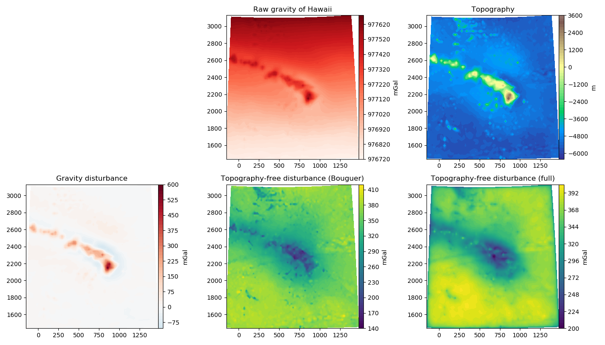

The fatiando.datasets package includes some data sets to make it easier
to try things out in Fatiando.
This example shows the gravity data from Hawaii.
Out:
Data keys: ['topography', u'area', 'topo-free', 'lon', 'gravity', 'topo-free-bouguer', 'height', 'y', 'shape', 'disturbance', 'lat', 'x', 'metadata']
Metadata:
Data from the eigen-6c4 spherical harmonic model.
Downloaded from http://icgem.gfz-potsdam.de
File header for the gravity data:
generating_institute gfz-potsdam
generating_date 2016/12/15
product_type gravity_field
body earth
modelname eigen-6c4
max_used_degree 2190
tide_system tide_free
functional gravity_ell (centrifugal term included)
unit mgal
refsysname WGS84
gmrefpot 3.98600441800E+14 m**3/s**2
radiusrefpot 6378137.000 m
flatrefpot 3.352810664747480E-03 (1/298.25722356300)
omegarefpot 7.29211500000E-05 1/s
long_lat_unit degree
latlimit_north 28.000000000000
latlimit_south 13.000000000000
longlimit_west 195.00000000000
longlimit_east 210.00000000000
gridstep 0.20000000000000
height_over_ell 5000.0000 m
latitude_parallels 76
longitude_parallels 76
number_of_gridpoints 5776
gapvalue 9999999.0000
weighted_mean 9.7714632E+05 mgal
maxvalue 9.7766755E+05 mgal
minvalue 9.7673969E+05 mgal
signal_wrms 2.6340410E+02 mgal
grid_format long_lat_value
File header for the topography data:
generating_institute gfz-potsdam
generating_date 2016/12/14
product_type topography
body earth
modelname etopo1_bin_int
functional topography_grd (grid)=>bi-linear interpolation
unit meter
refsysname WGS84
radiusrefsys 6378137.000 m
flatrefsys 3.352810664747480E-03 (1/298.25722356300)
long_lat_unit degree
latlimit_north 28.000000000000
latlimit_south 13.000000000000
longlimit_west 195.00000000000
longlimit_east 210.00000000000
gridstep 0.20000000000000
latitude_parallels 76
longitude_parallels 76
number_of_gridpoints 5776
gapvalue 99999.0000
weighted_mean -4.9606823E+03 meter
maxvalue 3.5530000E+03 meter
minvalue -6.2880000E+03 meter
signal_wrms 9.2299326E+02 meter
grid_format long_lat_value
x (north-south) and y (east-west) coordinates are UTM zone 4 (WGS84) in meters.
The gravity disturbance was calculated using the closed-form formula and the WGS84 ellipsoid.
The topography-free disturbances (both Bouguer and full) used densities
2670 kg/m^3 for the crust and 1040 kg/m^3 for the ocean water.
The full topography-free disturbance was calculated using a tesseroid model of the topography.
from __future__ import print_function
from fatiando.datasets import fetch_hawaii_gravity
import numpy as np
import matplotlib.pyplot as plt
# Load the gravity data from Hawaii
data = fetch_hawaii_gravity()
# The data are packaged in a dictionary. Look at the keys to see what is
# available.
print('Data keys:', data.keys())
# There are some metadata included
print('\nMetadata:\n')
print(data['metadata'])
# Let's plot all of it using the UTM x and y coordinates
shape = data['shape']
X, Y = data['x'].reshape(shape)/1000, data['y'].reshape(shape)/1000
fig = plt.figure(figsize=(14, 8))
plt.rcParams['font.size'] = 10
ax = plt.subplot(2, 3, 2)
ax.set_title('Raw gravity of Hawaii')
tmp = ax.contourf(Y, X, data['gravity'].reshape(shape), 60,
cmap='Reds')
fig.colorbar(tmp, ax=ax, pad=0, aspect=30).set_label('mGal')
ax = plt.subplot(2, 3, 3)
ax.set_title('Topography')
scale = np.abs([data['topography'].min(), data['topography'].max()]).max()
tmp = ax.contourf(Y, X, data['topography'].reshape(shape), 60,
cmap='terrain', vmin=-scale, vmax=scale)
fig.colorbar(tmp, ax=ax, pad=0, aspect=30).set_label('m')
ax = plt.subplot(2, 3, 4)
ax.set_title('Gravity disturbance')
scale = np.abs([data['disturbance'].min(), data['disturbance'].max()]).max()
tmp = ax.contourf(Y, X, data['disturbance'].reshape(shape), 60,
cmap='RdBu_r', vmin=-scale, vmax=scale)
fig.colorbar(tmp, ax=ax, pad=0, aspect=30).set_label('mGal')
# The disturbance without the effects of topography (calculated using the
# Bouguer plate)
ax = plt.subplot(2, 3, 5)
ax.set_title('Topography-free disturbance (Bouguer)')
tmp = ax.contourf(Y, X, data['topo-free-bouguer'].reshape(shape), 60,
cmap='viridis')
fig.colorbar(tmp, ax=ax, pad=0, aspect=30).set_label('mGal')
# The disturbance without the effects of topography (calculated using a
# tesseroid model of the topography)
ax = plt.subplot(2, 3, 6)
ax.set_title('Topography-free disturbance (full)')
tmp = ax.contourf(Y, X, data['topo-free'].reshape(shape), 60,
cmap='viridis')
fig.colorbar(tmp, ax=ax, pad=0, aspect=30).set_label('mGal')
plt.tight_layout()
plt.show()
Total running time of the script: ( 0 minutes 0.895 seconds)